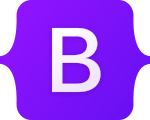

Bootstrap
Bootstrap – biblioteka CSS, rozwijana przez programistów Twittera, wydawany na licencji MIT. Zawiera zestaw przydatnych narzędzi ułatwiających tworzenie interfejsu graficznego stron oraz aplikacji internetowych. Bazuje głównie na gotowych rozwiązaniach HTML oraz CSS i może być stosowany m.in. do stylizacji takich elementów jak teksty, formularze, przyciski, wykresy, nawigacje i innych komponentów wyświetlanych na stronie. Biblioteka korzysta także z języka JavaScript
Początki Bootstrapa
Bootstrap, pierwotnie nazwany Twitter Blueprint, został opracowany przez Marka Otto i Jacoba Thorntona z Twittera jako platforma zachęcająca do spójności między wewnętrznymi narzędziami. Przed Bootstrapem do tworzenia interfejsu używano różnych bibliotek, co prowadziło do niespójności i dużego obciążenia konserwacją. Według twórcy Twittera Marka Otto:
"Zebraliśmy się razem z bardzo małą grupą programistów, aby zaprojektować i zbudować nowe wewnętrzne narzędzie i zobaczyliśmy okazję, aby zrobić coś więcej. Zauważyliśmy, że w trakcie tego procesu tworzymy coś znacznie bardziej istotnego niż inne wewnętrzne narzędzie. Kilka miesięcy później skończyliśmy z wczesną wersją Bootstrap jako sposobu dokumentowania i udostępniania wspólnych wzorców projektowych i zasobów w firmie."
Po kilku miesiącach tworzenia przez niewielką grupę entuzjastów, wielu programistów z Twittera zaczęło wnosić swój wkład w projekt w ramach Hack Week – tygodnia w stylu hackathonu dla zespołu programistów z Twittera. Projekt został przemianowany z Twitter Blueprint na Bootstrap i wydany 19 sierpnia 2011 roku jako projekt open source. Utrzymywany przez Marka Otto, Jacoba Thorntona oraz niewielką grupę programistów projekt, zaczął gromadzić wokół siebie coraz większą społeczność współtwórców.

Logo Bootstrapa
🡺